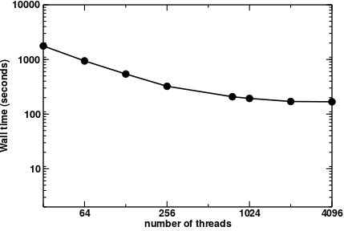
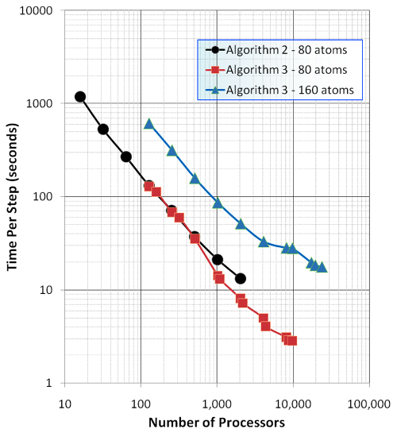
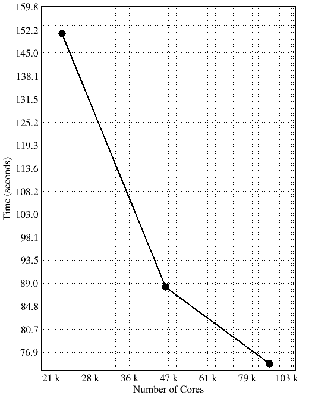
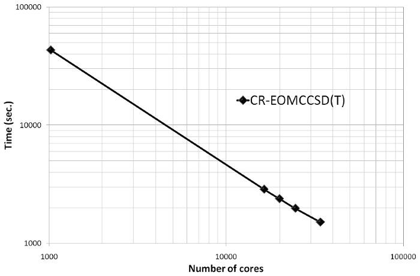
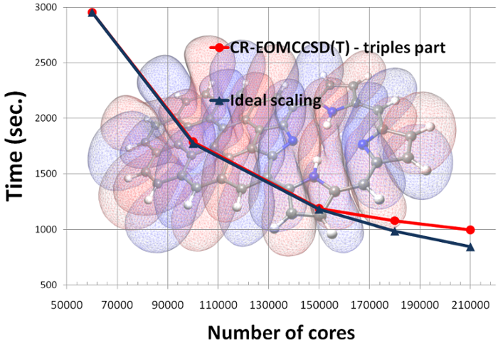
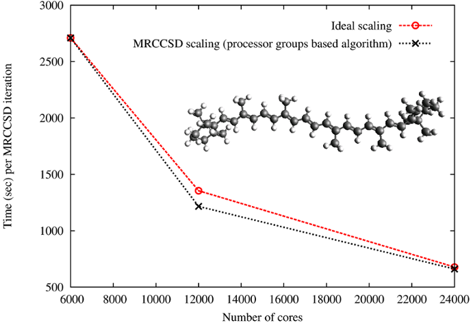
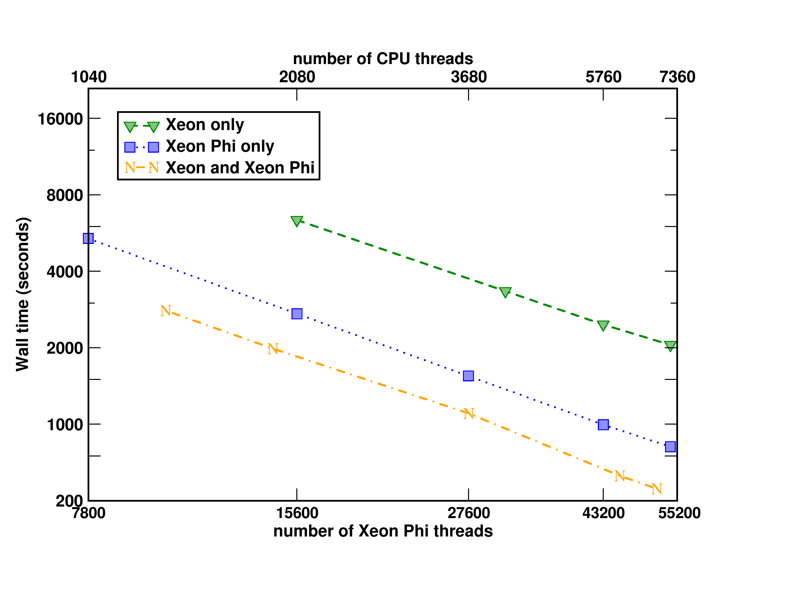
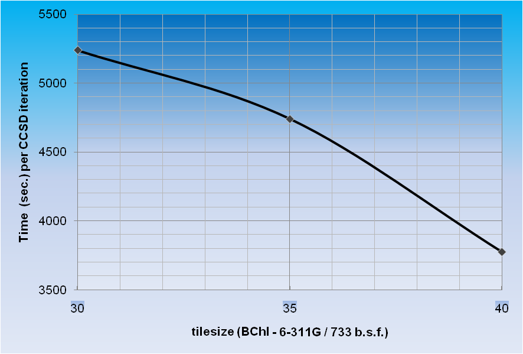
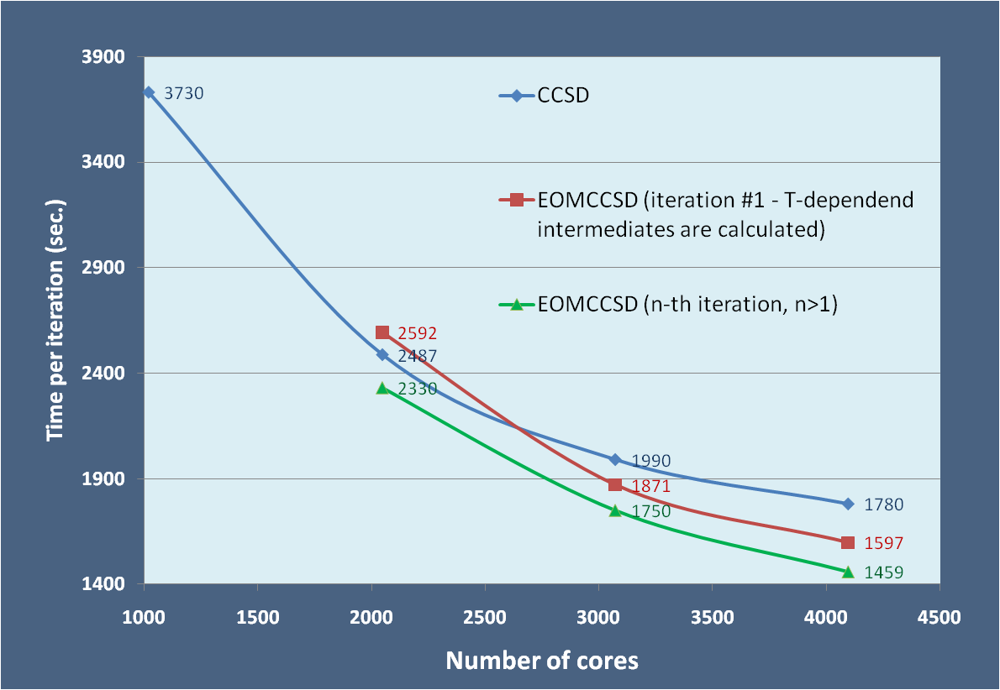
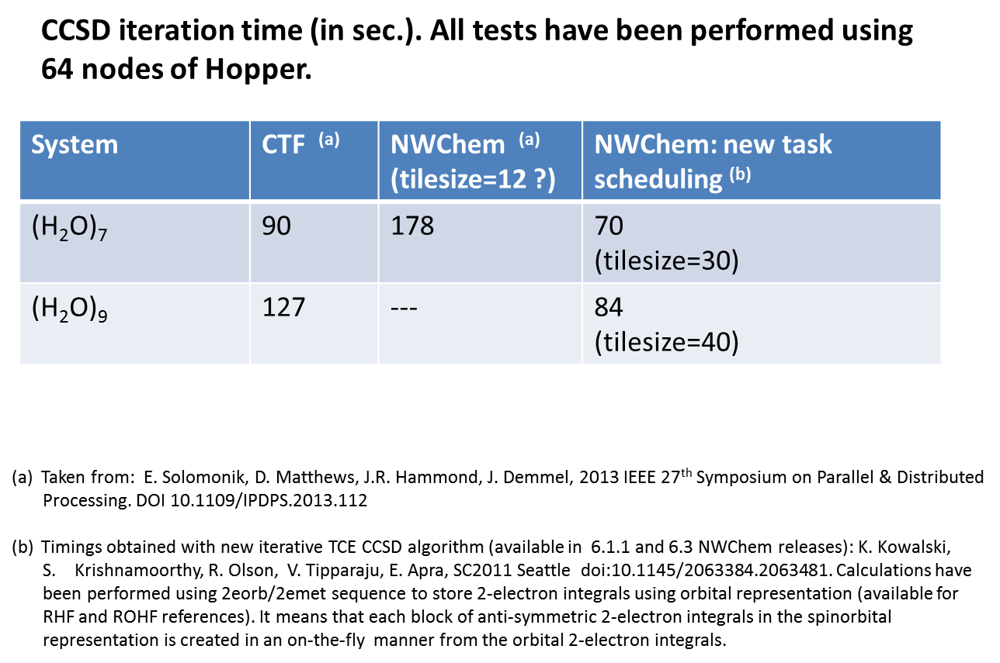

Benchmarks performed with NWChem¶
This page contains a suite of benchmarks performed with NWChem. The benchmarks include a variety of computational chemistry methods on a variety of high performance computing platforms. The list of benchmarks available will evolve continuously as new data becomes available. If you have benchmark information you would like to add for your computing system, please contact one of the developers.
Hybrid density functional calculation on the C240 Buckyball¶
Performance of the Gaussian basis set DFT module in NWChem. This calculation involved performing a PBE0 calculation (in direct mode) on the on C240 system with the 6-31G* basis set (3600 basis functions) without symmetry. These calculations were performed on the Cascade supercomputer located at PNNL. Input and output files are available.

Parallel performance of Ab initio Molecular Dynamics using plane waves¶
AIMD Parallel timings for  +122
+122 O.
These calculations were performed on the Franklin Cray-XT4 computer
system at NERSC.
O.
These calculations were performed on the Franklin Cray-XT4 computer
system at NERSC.

AIMD and AIMD/MM Parallel Timings for  +64O (unit
cell parameters SC=12.4 Angs. and cutoff energy =100Ry). These
calculations were performed on the Chinook HP computer system at MSCF
EMSL, PNNL.
+64O (unit
cell parameters SC=12.4 Angs. and cutoff energy =100Ry). These
calculations were performed on the Chinook HP computer system at MSCF
EMSL, PNNL.

Exact exchange timings – 80 atom cell of hematite (cutoff energy=100Ry). These
calculations were performed on the Franklin Cray-XT4 computer system at
NERSC.

Exact
exchange timings – 576 atom cell of water (cutoff energy=100Ry). These
calculations were performed on the Hopper Cray-XE6 computer system at
NERSC.

Parallel performance of the CR-EOMCCSD(T) method (triples part)¶
An example of the scalability of the triples part of the CR-EOMCCSD(T) approach for Green Fluorescent Protein Chromophore (GFPC) described by cc-pVTZ basis set (648 basis functions) as obtained from NWChem. Timings were determined from calculations on the Franklin Cray-XT4 computer system at NERSC. See the input file for details.

And more recent scalability test of the CR-EOMCCSD(T) formalism (Jaguar Cray XT5 at ORNL, see K. Kowalski, S. Krishnamoorthy, R.M. Olson, V. Tipparaju, E. Aprà , SC2011, for details).

Parallel performance of the multireference coupled cluster (MRCC) methods¶
In collaboration with Dr. Jiri Pittner’s group from Heyrovsky Institute
of Physical Chemistry implementations of two variants of state-specific
MRCC approaches have been developed. During his internship at PNNL Jirka
Brabec, using novel processor-group-based algorithms, implemented
Brillouin-Wigner and Mukherjee MRCC models with singles and doubles. The
scalabililty tests for the Brillouin-Wigner MRCCSD approach have been
performed on Jaguar XT5 system at ORNL for  -carotene in 6-31
basis set (472 orbitals, 216 correlated electrons, 20 reference
functions; see J.Brabec, J. Pittner, H.J.J. van Dam, E. Aprà, K.
Kowalski, JCTC 2012, 8(2), pp 487–497).
The input file and output files for runs
at 6000 cores,
at 12000 cores
and at 24000 cores
are available.
-carotene in 6-31
basis set (472 orbitals, 216 correlated electrons, 20 reference
functions; see J.Brabec, J. Pittner, H.J.J. van Dam, E. Aprà, K.
Kowalski, JCTC 2012, 8(2), pp 487–497).
The input file and output files for runs
at 6000 cores,
at 12000 cores
and at 24000 cores
are available.

Former PNNL postdoctoral
fellow Dr. Kiran Bhaskaran Nair developed perturbative MRCCSD(T)
approaches, which accounts for the effect of triple excitations.
Scaling of the triples part of the BW-MRCCSD(T) method for
-carotene in 6-31 basis set (JCP 137, 094112 (2012)). The
scalability tests of the BW-MRCCSD(T) implementation of NWChem have been
performed on the Jaguar Cray-XK6 computer system of the National Center
for Computational Sciences at Oak Ridge National Laboratory.

Timings of CCSD/EOMCCSD for the oligoporphyrin dimer¶
CCSD/EOMCCSD timings for oligoporphyrin dimer (942 basis functions, 270 correlated electrons, D2h symmetry, excited-state calculations were performed for state of b1g symmetry, in all test calculation convergence threshold was relaxed, 1024 cores were used). See the input file for details.
--------------------------------------------------------
Iter Residuum Correlation Cpu Wall
--------------------------------------------------------
1 0.7187071521175 -7.9406033677717 640.9 807.7
......
MICROCYCLE DIIS UPDATE: 10 5
11 0.0009737920958 -7.9953441809574 691.1 822.2
--------------------------------------------------------
Iterations converged
CCSD correlation energy / hartree = -7.995344180957357
CCSD total energy / hartree = -2418.570838364838890
EOM-CCSD right-hand side iterations
--------------------------------------------------------------
Residuum Omega / hartree Omega / eV Cpu Wall
--------------------------------------------------------------
......
Iteration 2 using 6 trial vectors
0.1584284659595 0.0882389635508 2.40111 865.3 1041.2
Iteration 3 using 7 trial vectors
0.0575982107592 0.0810948687618 2.20670 918.0 1042.2
Performance tests of the GPU implementation of non-iterative part of the CCSD(T) approach¶
Recent tests of the GPU CCSD(T) implementation performed on Titan Cray XK7 1 system at ORNL (C22H14, 378 basis set functions, C1 symmetry; 98 nodes: 8 cores per node + 1GPU)
Using 8 CPU cores
Using CUDA CCSD(T) code
Using 0 device(s) per node
CCSD[T] correction energy / hartree = -0.150973754992986
CCSD[T] correlation energy / hartree = -3.067917061062492
CCSD[T] total energy / hartree = -844.403376796441080
CCSD(T) correction energy / hartree = -0.147996460406684
CCSD(T) correlation energy / hartree = -3.064939766476190
CCSD(T) total energy / hartree = -844.400399501854849
Cpu & wall time / sec 9229.9 9240.3
Using 7 CPU cores and one GPU
Using CUDA CCSD(T) code
Using 1 device(s) per node
CCSD[T] correction energy / hartree = -0.150973754993019
CCSD[T] correlation energy / hartree = -3.067917061062597
CCSD[T] total energy / hartree = -844.403376796441307
CCSD(T) correction energy / hartree = -0.147996460406693
CCSD(T) correlation energy / hartree = -3.064939766476270
CCSD(T) total energy / hartree = -844.400399501854963
Cpu & wall time / sec 1468.0 1630.7
Using 1 CPU core and one GPU
Using CUDA CCSD(T) code
Using 1 device(s) per node
CCSD[T] correction energy / hartree = -0.150973754993069
CCSD[T] correlation energy / hartree = -3.067917061063028
CCSD[T] total energy / hartree = -844.***************
CCSD(T) correction energy / hartree = -0.147996460406749
CCSD(T) correlation energy / hartree = -3.064939766476708
CCSD(T) total energy / hartree = -844.400399501861216
Cpu & wall time / sec 1410.9 1756.5
Without GPU 9240.3 sec. With GPU 1630.7 sec.
Next release: GPU implementation of non-iterative part of the MRCCSD(T) approach (K. Bhaskarsan-Nair, W. Ma, S. Krishnamoorthy, O. Villa, H. van Dam, E. Aprà, K. Kowalski, J. Chem. Theory Comput. 9, 1949 (2013))

Performance tests of the Xeon Phi implementation of non-iterative part of the CCSD(T) approach¶
Tests of the Xeon Phi CCSD(T) implementation performed on the EMSL cascade system at PNNL

Aprà, E.; Klemm, M.; Kowalski, K., “Efficient Implementation of Many-Body Quantum Chemical Methods on the Intel® Xeon Phi Coprocessor,” High Performance Computing, Networking, Storage and Analysis, SC14: International Conference for , vol., no., pp.674-684, 16-21 Nov. 2014 http://dx.doi.org/10.1109/SC.2014.60
(Triplet state of Si4C3N2H12, 706 basis set functions, C1 symmetry)
Non-iterative part of the CCSD(T) approach: Comparing Xeon Phi and NVidia K20X performance¶
Wall time to solution (in seconds) of non-iterative triples part of the single-reference CCSD(T) approach for the pentacene molecule using Intel MIC and Nvidia GPU implementations. Tests were performed using 96 compute nodes on the Cascade system at EMSL (Intel® Xeon™ Phi 5110P) and Titan system at ORNL (NVIDIA Tesla® K20X).
( input file)
| Tilesize | Intel Xeon Phi 5110P | Nvidia K20X |
|---|---|---|
| 18 | 1806.4 | 1824.9 |
| 21 | 1652.2 | 1699.3 |
| 24 | 1453.3 | 1554.4 |
Current developments for high accuracy: alternative task schedulers (ATS)¶
Currently various development efforts are underway for high accuracy methods that will be available in future releases of NWChem. The examples below shows the first results of the performance of the triples part of Reg-CCSD(T) on GPGPUs (left two examples) and of using alternative task schedules for the iterative CCSD and EOMCCSD.
 Scalability of the triples part of
the Reg-CCSD(T) approach for Spiro cation described by the Sadlej’s TZ
basis set (POL1). The calculations were performed using Barracuda
cluster at EMSL.
Scalability of the triples part of
the Reg-CCSD(T) approach for Spiro cation described by the Sadlej’s TZ
basis set (POL1). The calculations were performed using Barracuda
cluster at EMSL.
 Speedup
of GPU over CPU of the (T) part of the (T) part of the Reg-CCSD(T)
approach as a function of the tile size for the uracil molecule. The
calculations were performed using Barracuda cluster at EMSL.
Speedup
of GPU over CPU of the (T) part of the (T) part of the Reg-CCSD(T)
approach as a function of the tile size for the uracil molecule. The
calculations were performed using Barracuda cluster at EMSL.
 *Comparison of the CCSD/EOMCCSD
iteration times for BacterioChlorophyll (BChl, Mg O6 N4 C 36 H38) for
various tile sizes. Calculations were performed for 3-21G basis set (503
basis functions, C1 symmetry, 240 correlated electrons, 1020
cores).
*Comparison of the CCSD/EOMCCSD
iteration times for BacterioChlorophyll (BChl, Mg O6 N4 C 36 H38) for
various tile sizes. Calculations were performed for 3-21G basis set (503
basis functions, C1 symmetry, 240 correlated electrons, 1020
cores).
 *Time per CCSD iteration for BChl in 6-311G basis set (733 basis functions, C1 symmetry, 240 correlated electrons, 1020 cores) as a function of tile size.  Scalability of the CCSD/EOMCCSD codes for BChl in 6-311G basis set (733 basis functions; tilesize=40, C1 symmetry, 240 correlated electrons).
Other tests:
The impact of the tilesize on the CCSD(ATS) timings: All tests have been performed for uracil trimer (6-31G* basis set; all core electrons frozen) on Hopper using 25 nodes (600 cores). One can observe almost 10-fold speedup of the CCSD(ATS) code for tilesize=40 compared to standard TCE CCSD implementation using tilesize=12.

Performance tests for water clusters

Luciferin (aug-cc-pVDZ basis set; RHF reference; frozen core) - time per CCSD iteration ( input file)
tilesize = 30
256 cores 644 sec.
512 378 sec.
664 314 sec.
1020 278 sec.
1300 237 sec.
tilesize = 40
128 998 sec.
256 575 sec.
Sucrose (6-311G** basis set; RHF reference; frozen core) - time per CCSD iteration ( input file)
tilesize = 40
256 cores 1486 sec.
512 910 sec.
1024 608 sec.
Cytosine-OH (POL1; UHF reference; frozen core) - time per EOMCCSD iteration ( input file)
tilesize = 30
256 cores 44.5 sec.
tilesize = 40
128 cores 55.6 sec.
Density functional calculation of a zeolite fragment¶
Benchmark results with NWChem 7.0.0 for LDA calculations (energy plus gradient) on a 533 atoms siosi8 zeolite fragment. The input uses an atomic orbital basis set with 7108 functions and a charge density fitting basis with 16501 functions. The input file is available at this link.
| computer | # nodes | cores/node | total # cores | Wall time (seconds) |
|---|---|---|---|---|
| cascade | 9 | 16 | 144 | 1247 |
| cascade | 20 | 16 | 320 | 703 |
| tahoma | 4 | 36 | 144 | 927 |
| tahoma | 9 | 36 | 324 | 524 |
Hardware used:
- EMSL cascade specifications
- EMSL tahoma specifications